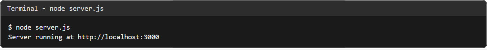
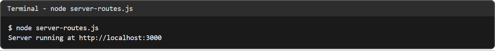
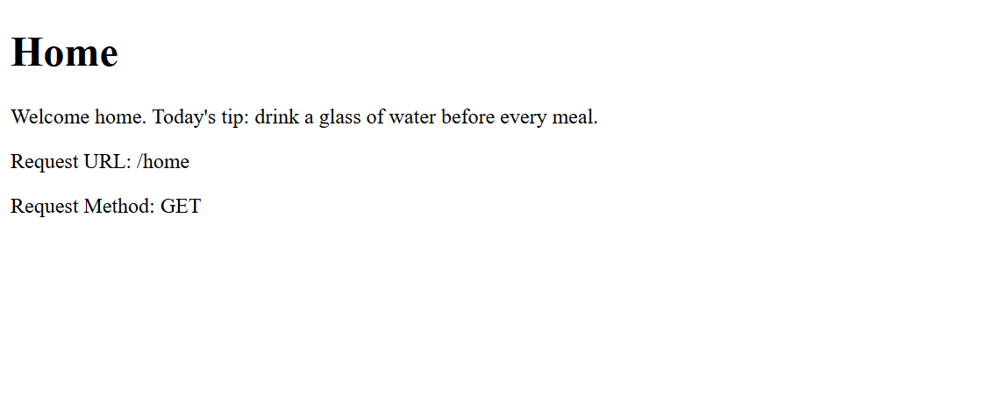
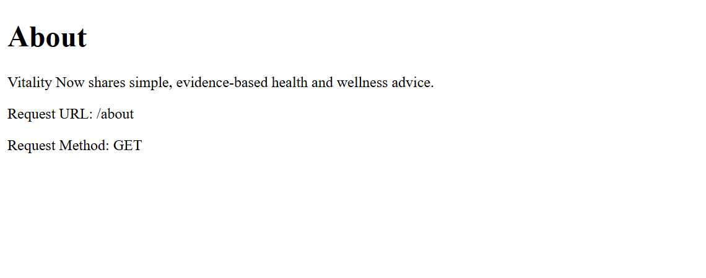

Ex. No. 10 – Developing Server-Side Application Using Node.js
A basic HTTP server built with the built-in http module, plus an extension that serves different pages for /home and /about.
This is a server-side exercise, so GitHub Pages can only show the source and the output captured from a real local run (Node.js, MongoDB 8.2 and mongosh on the author's machine).
Source code
server.js
const http = require('http');
const server = http.createServer((req, res) => {
res.writeHead(200, {
'Content-Type': 'text/html'
});
res.end(`
<!DOCTYPE html>
<html>
<head>
<title>Node.js Server</title>
</head>
<body>
<h1>Welcome to Node.js!</h1>
<p>This is a server-side application.</p>
<p>Request URL: ${req.url}</p>
<p>Request Method: ${req.method}</p>
</body>
</html>
`);
});
server.listen(3000, () => {
console.log('Server running at http://localhost:3000');
});
server-routes.js
// Sample question 5: different messages for the /home and /about routes.
const http = require('http');
const pages = {
'/': ['Welcome to Vitality Now', 'Node.js is serving this Health & Wellness blog.'],
'/home': ['Home', 'Welcome home. Today\'s tip: drink a glass of water before every meal.'],
'/about': ['About', 'Vitality Now shares simple, evidence-based health and wellness advice.']
};
const server = http.createServer((req, res) => {
const page = pages[req.url];
const status = page ? 200 : 404;
const [title, message] = page || ['Not Found', `No page exists at ${req.url}`];
res.writeHead(status, { 'Content-Type': 'text/html' });
res.end(`<!DOCTYPE html>
<html>
<head><title>${title}</title></head>
<body>
<h1>${title}</h1>
<p>${message}</p>
<p>Request URL: ${req.url}</p>
<p>Request Method: ${req.method}</p>
</body>
</html>`);
});
server.listen(3000, () => {
console.log('Server running at http://localhost:3000');
});
Output



